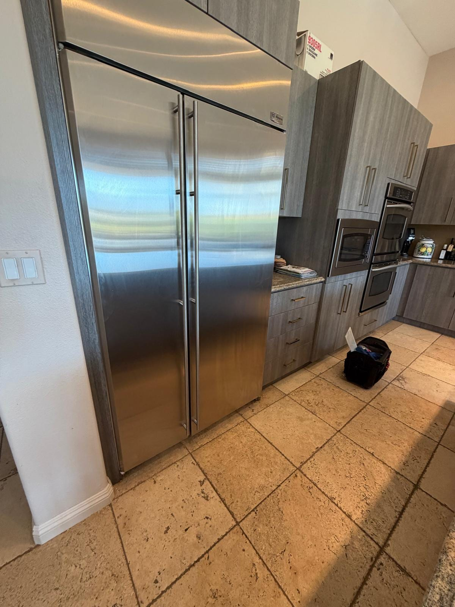
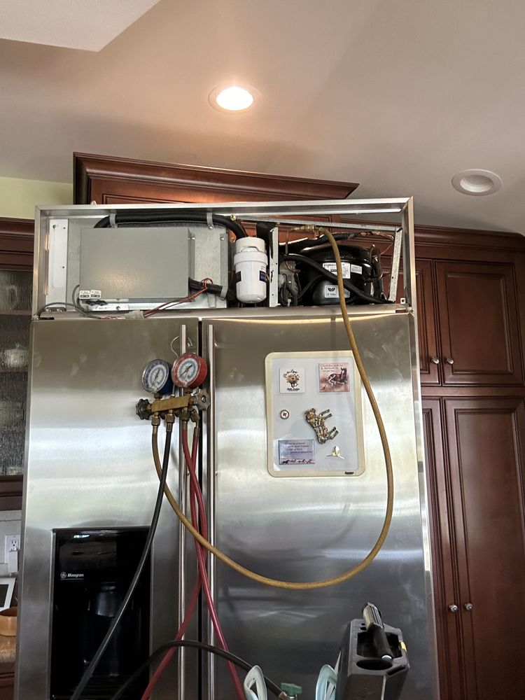
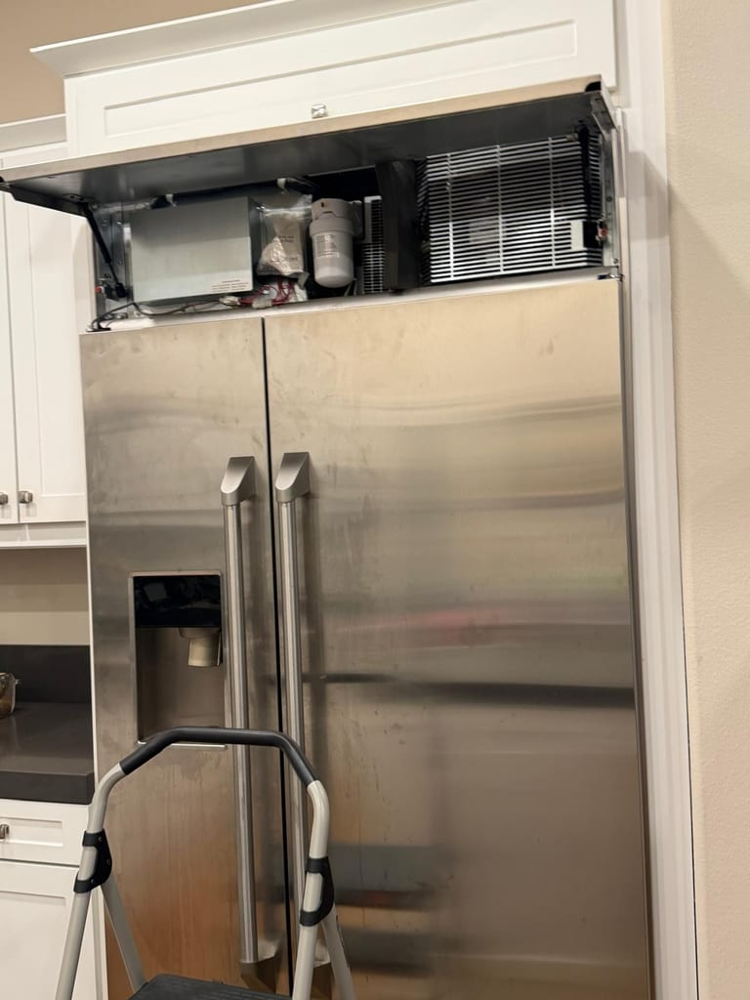
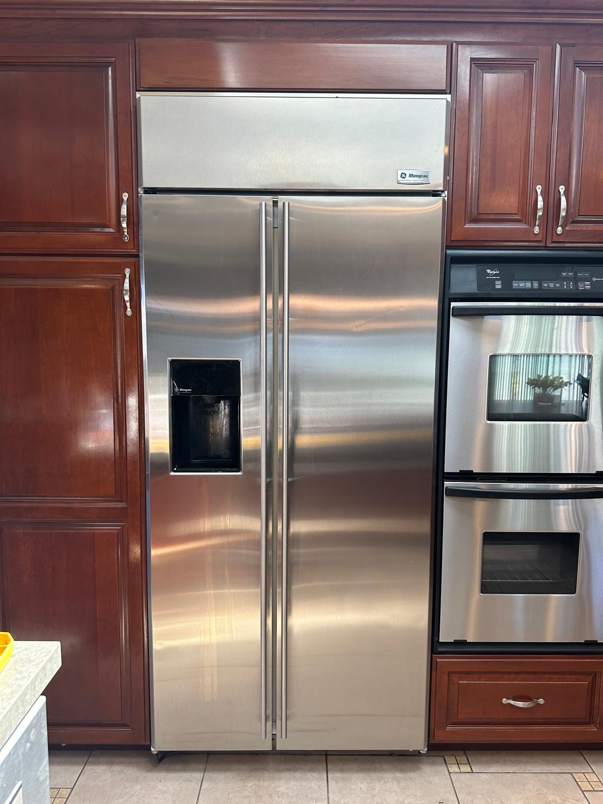
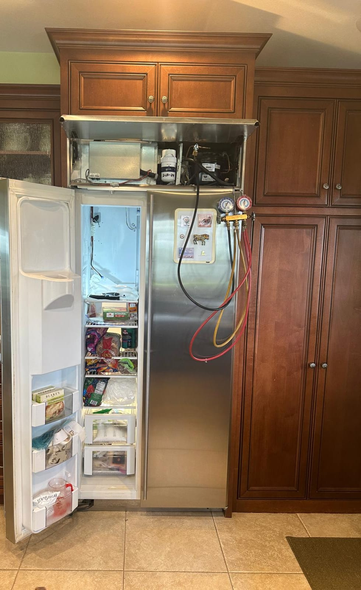

GE Refrigerator, Washer, Dryer & Range Repair in Orange County
Refrigerators that stop cooling, main control boards that fail, ovens throwing F-codes, and dryers that won't heat. We service the whole GE family, from Hotpoint and GE to Profile, Cafe, and Monogram built-ins. Same-day service available.
5.0 · 156 Google reviewsMon–Sat, 8am–7pm.

What to expect
- Flat $99 diagnostic feeApplied toward the repair if you approve the work.
- Written quote firstItemized, before any work starts.
- 90-day parts, 30-day laborWarranty on every repair.
- Same-day serviceCall or request online.
Family-owned since 2017 · Licensed, bonded & insured
Recent GE Repairs
Real GE repairs our technicians completed recently, with the city of each job.



Orange County, CA
GE Monogram Refrigerator Built-In Cooling Repair


Mission Viejo, CA
GE Monogram Refrigerator Condenser Motor Replacement

Huntington Beach, CA
GE Monogram Refrigerator Display Board Replacement
Show all 9 GE repairs

Laguna Beach, CA
GE Monogram Refrigerator Compressor Replacement
Want the component context behind these photos? Read our five-job GE Monogram refrigerator case study, or see our oven and stove repair service.
See all recent repairsWhat Our Customers Say
From our 156 verified 5-star Google reviews
Friendly, on time, efficient, and successful repair.
AG fixed my Electrolux dryer and was very professional. He was efficient, genuine, and had great customer service.
AG came same day when called and fixed my GE range.
From Call to Fixed: How a GE Repair Works
Here is exactly what happens from your first call to a fully working GE appliance.
Request a RepairCall or Request Online
Reach us at (949) 629-5365 or submit the contact form. Share the model number and the symptom or error code, and we schedule you the same day when possible.On-Site Diagnosis
A technician arrives in a 2-hour window and tests the board, sensor, element, motor, or valve to find the exact fault, rather than guessing at parts.Upfront Quote
You get a clear, itemized quote before we start. The $99 diagnostic fee is credited toward the repair if you proceed. No surprise charges at the end.Repair & Warranty
Common GE boards, elements, and valves ride in the van, so most repairs finish the same day. Every repair carries a 90-day parts and 30-day labor warranty: if the same problem returns within 30 days, we come back at no charge.
Pricing & Discounts
- $99 diagnostic fee: applied toward your repair when you approve the work. If you decide not to proceed, the $99 covers the visit.
- Multi-unit visits: first unit $99, each additional unit on the same visit $49.
- 20% off labor for repeat customers and seniors 60+ (cannot combine with other offers).
Estimates vary by brand, part availability, and diagnosis. Final quote is provided before repair. See full pricing guide
Diagnostic visit$99
- Applied toward the repair when you approve the work
- Itemized written quote before any work starts
- You decide whether to proceed
Refrigerators, Ranges, Washers, and Dryers: Every GE We Repair
GE builds a huge share of Orange County kitchens and laundry rooms, from entry-level Hotpoint to Monogram built-ins. We service the full lineup, and we know the parts and control boards specific to each.
- Refrigerators (French Door, Side-by-Side, Profile)
- GE fridges are known for main control board faults and defrost problems. We handle cooling loss, warm sections, evaporator-fan and defrost faults, and ice-maker and dispenser issues.
- Monogram & Cafe Built-Ins
- GE's luxury built-in refrigeration and prosumer kitchen lines. These high-value units are almost always worth repairing, and we service the sealed systems, boards, and fans that keep them running.
- Top-Load & Front-Load Washers
- GE top-loaders are known for mode-shifter and lid-switch faults; front-loaders for bearings and door locks. No-agitate, no-spin, and no-drain are the calls we handle most.
- Electric & Gas Dryers
- Both vented electric and gas dryers. A dryer that runs cold usually needs a heating element, thermal fuse, or igniter, and a clogged vent is the hidden culprit behind most no-heat calls.
- Ranges & Wall Ovens (Gas, Electric, Induction)
- Freestanding and slide-in ranges plus wall ovens, including Cafe and Profile. F-codes, a dead bake element, a weak igniter, or a drifting sensor are the faults we meter and repair.
- Dishwashers & Over-the-Range Microwaves
- GE and Profile dishwashers that won't drain or clean, and over-the-range microwaves that stop heating. A clogged filter, drain pump, control board, or door switch is the usual cause.
Control Boards, F-Codes, and GE's Known Weak Points
GE appliances fail in specific, recognizable ways. These are the repairs our technicians handle most often on Orange County homes.
- Refrigerator Main Control Board Failure
- The board that runs the whole fridge fails, and the compressor or fans never get the signal to run, so the unit stops cooling. This is GE's best-known weak point across many models. We test the board before condemning the compressor.
- Refrigerator Not Cooling / Defrost Fault
- A warm fridge can also be a stuck defrost system icing over the evaporator coils or a worn evaporator fan. We diagnose the sealed system, defrost, and fan precisely rather than guessing at the most expensive part first.
- Ice Maker Not Working
- A GE ice maker that stops filling is often the water inlet valve, the ice-maker assembly, or a frozen fill tube, not the whole door. We test the valve and assembly so you are not paying to replace a part that still works.
- Oven F-Code or Won't Heat
- An F-code is the electronic control reporting a fault, usually a failed board or a shorted temperature sensor. A cold oven often means a dead bake element or a weak igniter. We meter the element, sensor, and board to find the real cause.
- Washer Won't Agitate or Spin
- On GE top-loaders, a failed mode shifter, worn motor, broken lid switch, or transmission fault stops the agitate or spin. Older direct-drive GE washers are known for mode-shifter trouble. We test each part before quoting.
- Dryer Won't Heat
- Tumbles but blows cold. On electric models it is a blown thermal fuse or heating element; on gas it is the igniter or valve coil. A blocked vent overheats and blows the fuse, so we check airflow as part of every no-heat repair.
- Dishwasher Won't Drain or Clean
- Standing water or gritty dishes usually trace to a clogged filter, a jammed drain pump, or a failed control board. We clear the blockage and confirm the pump and inlet valve before returning the unit to service.
- Range Igniter or Bake Element
- A gas burner that clicks but won't light or an oven that won't reach temperature usually means a weak igniter, a failed bake element, or a bad spark module. We meter the igniter and element to pin down which one before quoting parts.
Hotpoint to Monogram: The GE Family Explained
GE is not one line of appliances, it is five, and knowing which tier you own helps explain both the price you paid and the parts your repair needs. From the entry level up, GE Appliances builds Hotpoint (budget), GE (mainstream), GE Profile (upper-mid with more features), Cafe (design-forward with customizable hardware), and Monogram (built-in luxury that competes with Sub-Zero and Wolf). GE Appliances has been owned by Haier since 2016, but the brands, the engineering, and the Louisville plants carried straight through.
What matters for a repair is that these tiers share a great deal under the panel. A Cafe range and a GE Profile range are close cousins, and a Monogram built-in refrigerator uses sealed-system and control parts you will recognize from the mainstream line. So a technician who genuinely knows GE already knows most of the family, and the part that fixes a GE fridge is often the exact part that fixes the Profile next to it. We carry the common boards, fans, valves, and elements on the van precisely because they cross so many GE models.
There is one thread that runs through the whole family, and it is worth knowing: GE's electronic control boards. The main control board in the refrigerator and the electronic oven control in the range are the parts GE appliances are most known for failing. The good news is they are a well-understood, well-stocked repair. If your GE, Profile, Cafe, or Monogram appliance is acting erratically, losing cooling, or throwing an F-code, read us the model number when you call and we will bring the right board and the right diagnostic plan so the first visit is the visit that fixes it.
GE Repair Costs: What to Expect in Orange County
A new GE refrigerator or range starts well above most repair costs, so for the common faults repair is the clear financial choice. These are typical Orange County ranges, not quotes.
| Repair Type | Typical Range |
|---|---|
| Service call / diagnostic: Orange County market average (often credited toward repair) | $75 – $100 |
| Refrigerator main control board | $250 – $480 |
| Refrigerator compressor / sealed system | $350 – $700 |
| Ice maker assembly / inlet valve | $180 – $360 |
| Washer lid switch / mode shifter / motor | $180 – $400 |
| Dryer heating element / thermal fuse | $180 – $320 |
| Dishwasher drain pump / control board | $180 – $360 |
| Oven control board / bake element / igniter | $200 – $420 |
Estimates vary by brand, part availability, and diagnosis. Final quote is provided before repair.
Our company diagnostic fee is a flat $99 in Orange County, credited toward the repair if you proceed. See our full appliance repair cost guide for broader Orange County pricing context.
Ready to schedule your GE repair?
GE repair across Orange County
Universal Appliances Repair Group Inc. provides GE appliance repair across Orange County, California, including French-door and side-by-side refrigerators, top-load and front-load washers, electric and gas dryers, dishwashers, and gas, electric and induction ranges, plus the GE family of Hotpoint, GE Profile, Cafe and Monogram. Common repairs include main control board failures, refrigerators not cooling, ice-maker faults and oven F-codes.
We serve Anaheim, Santa Ana, Irvine, Huntington Beach, Costa Mesa, and surrounding cities, with same-day service available. Call (949) 629-5365 or book online to schedule a GE repair visit.
What Orange County GE Owners Ask Us
The most common questions from GE owners across Anaheim, Santa Ana, Irvine, Huntington Beach, and surrounding Orange County cities.
Still have a question? Call (949) 629-5365.
Yes. GE refrigerators are among the most common we service in Orange County. We handle GE French-door, side-by-side, and bottom-freezer units, plus GE Profile, Cafe, and Monogram built-ins, and we carry the common main control boards, evaporator fans, ice-maker assemblies, and inlet valves on the van. GE fridges are especially known for main control board faults, so we test the board and the sealed system before quoting. Call (949) 629-5365 for same-day availability in Anaheim, Santa Ana, Irvine, Huntington Beach, and surrounding cities.
A GE refrigerator that stops cooling most often points to one of three things: a failed main control board, a stuck defrost system icing over the evaporator coils, or a worn evaporator fan. GE's main control board is a well-known weak point across many models, and when it fails the compressor or fans may never get the signal to run. Less often the sealed system or compressor is at fault. We diagnose which one it is before quoting, because a control board and a compressor are very different repairs and prices. Call us to confirm the exact part.
Yes. GE Appliances builds Hotpoint, GE, GE Profile, Cafe, and Monogram, and they share much of the same engineering, control boards, and parts up and down the lineup. Monogram is the built-in luxury tier and Cafe is the design-focused line, but under the panel they are still GE, so our technicians already know them and often carry parts that fit across the family. If you are not sure which GE tier you own, read us the model number when you call and we will confirm it and bring the right parts.
On GE ranges and wall ovens, an F-code on the display is the electronic control (the ERC or clock) reporting a fault, often a failed control board or a shorted temperature sensor. An oven that simply will not heat usually has a failed bake element on electric models or a weak igniter on gas models. GE ovens are known for control-board and sensor faults, so we meter the element, sensor, and board to find the real cause rather than swapping parts. Most GE oven repairs finish the same day once we confirm the fault.
A GE dryer that tumbles but blows cold air has usually lost its heating element or a thermal fuse on electric models, or its igniter or gas valve coil on gas models. A blocked vent is the hidden cause behind most no-heat calls, because trapped heat overheats and blows the thermal fuse, so we check airflow as part of every repair. We test the element, fuse, thermostats, and igniter to find the real failure rather than swapping parts, and we carry the common GE heating parts on the van.
On a GE top-load washer, a tub that fills but won't agitate or spin usually means a failed mode shifter, a worn drive motor, a broken lid switch, or a transmission fault. GE top-loaders with the older direct-drive design are known for mode-shifter and motor problems. If the water also won't drain, the pump is clogged or dead. We isolate whether it is the lid switch, mode shifter, motor, or pump before quoting so you only pay for the part that actually failed.
In most cases, yes. GE parts are widely available and reasonably priced, and the common faults (a control board, an ice-maker assembly, a heating element, a lid switch, or a bake element) cost a fraction of a new machine. The repairs worth a closer look are a failed sealed system or compressor on an older fridge, which is a bigger job. For a Monogram or Cafe built-in, repair is almost always the right call given how much those units cost to replace. We give you a written quote before any work so you can decide with real numbers.
Our company diagnostic fee is $99 in Orange County, credited toward the repair if you proceed. Typical GE repairs run $250 to $480 for a refrigerator main control board, $180 to $360 for an ice-maker assembly or dishwasher pump, $180 to $320 for a dryer heating element, $180 to $400 for a washer lid switch or motor, and $200 to $420 for an oven control board or bake element. Because a new GE refrigerator or range starts well above these figures, most repairs are clearly worth it. Estimates vary by model and part availability; we quote before starting.
We serve all of Orange County including Anaheim, Santa Ana, Irvine, Huntington Beach, Costa Mesa, Mission Viejo, Fullerton, Garden Grove, Lake Forest, Newport Beach, Orange, and surrounding cities. GE is one of the most common brands in Orange County kitchens and laundry rooms, so we service it across every neighborhood daily. Call (949) 629-5365 to confirm same-day availability in your area.
One GE Kitchen & Laundry, Every Appliance Covered
A GE refrigerator usually shares the house with a GE range, washer, and dryer. One call handles your whole lineup, from the control board to the drain pump.
- Refrigerator RepairFrench-door and side-by-side units: control-board faults, cooling loss, defrost problems, and ice makers.
- Oven & Stove RepairRanges and wall ovens: F-codes, dead bake elements, weak igniters, and temperature-sensor drift.
- Washer RepairTop-load and front-load: no-agitate, no-spin, no-drain, mode shifters, lid switches, and leaks.
- Dryer RepairElectric and gas dryers that won't heat, take too long, or won't start: elements, fuses, and igniters.
- Dishwasher RepairNot draining, not cleaning, standing water, and control-panel faults on GE and Profile dishwashers.
- Garbage Disposal RepairHumming, jammed, or leaking disposals under the sink, repaired or replaced the same day.
- Repair Cost GuideTypical Orange County price ranges by appliance and repair, so you know what to expect before you call.
- All ServicesEvery appliance we repair across Orange County, from refrigerators to wine coolers.
Need GE Repair in Orange County?
Same-day service available. Call now or book online; a technician will confirm your appointment within the hour.
Backed by 156 verified 5-star Google reviews.
Call (949) 629-5365
Request a Repair
Mon–Sat, 8am–7pm